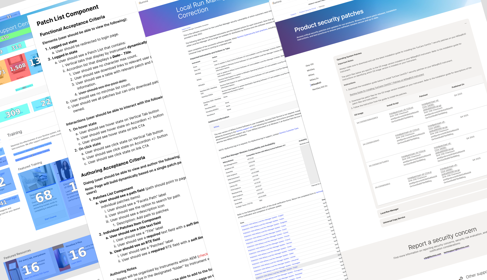
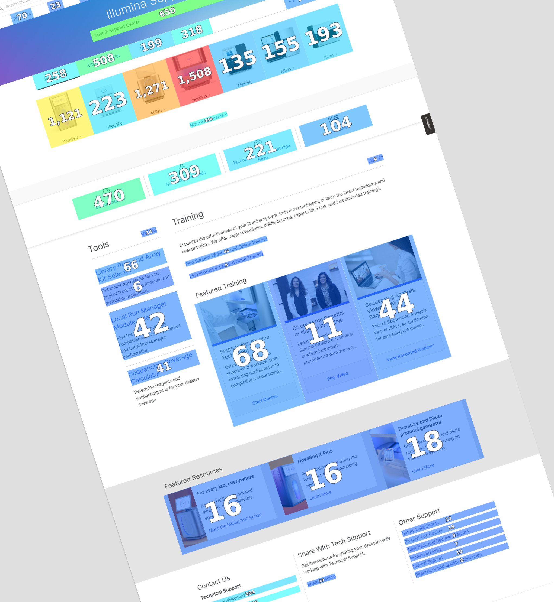
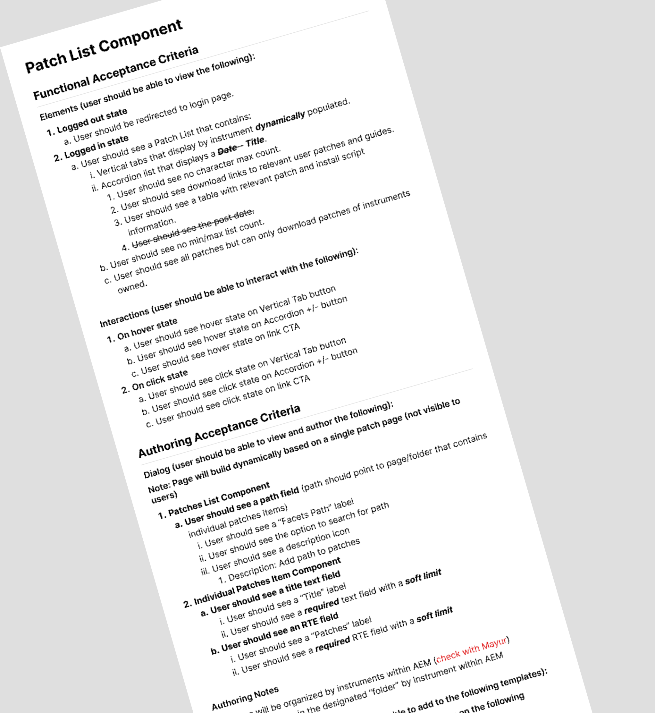
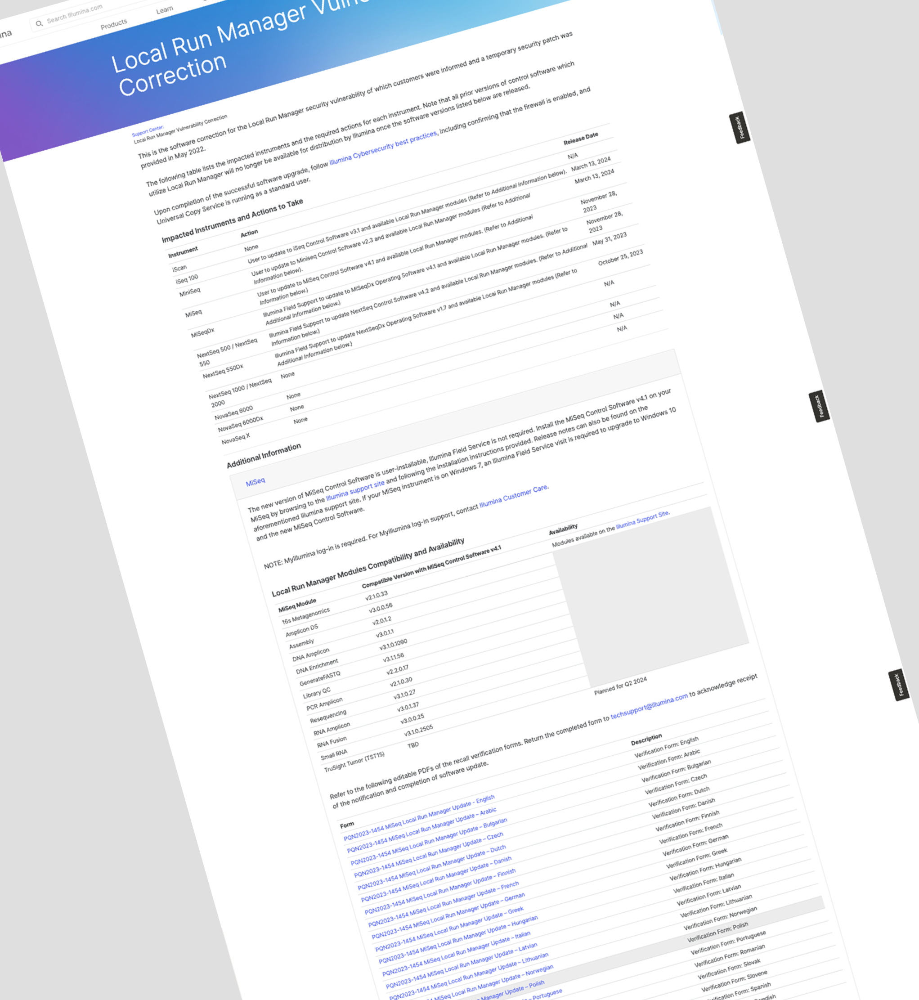
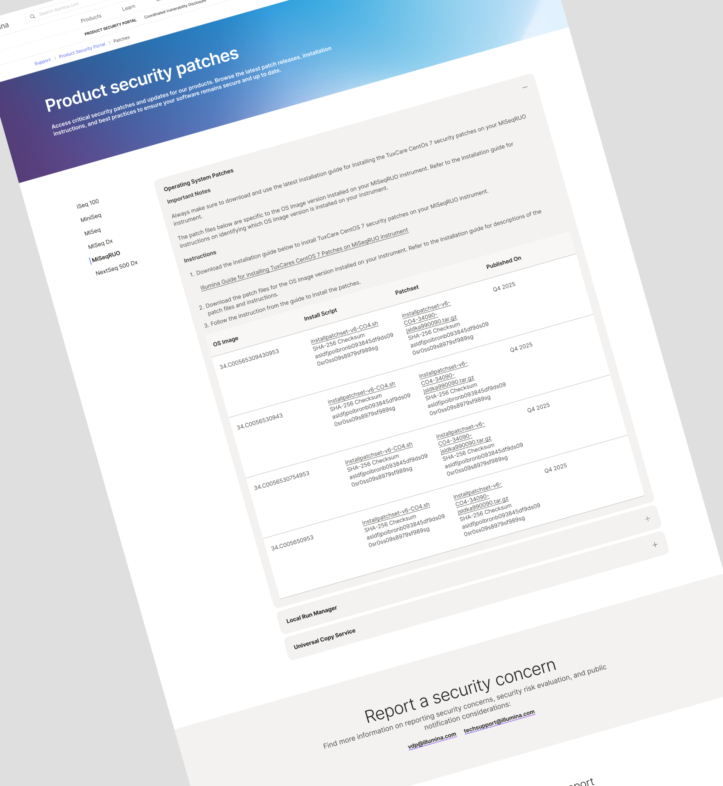
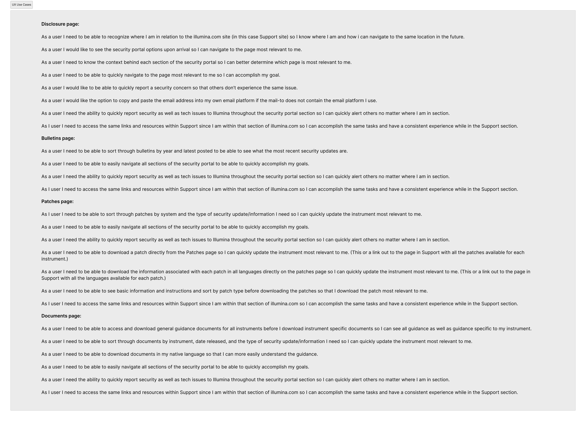

Illumina - UI/UX Design, synthesizing executive objectives into streamlined, user-focused interface solutions that meet compliance mandates while adhering to a consistent and scalable design system.
Maintaining cross-browser compatibility for all new and existing content. Upholding the integrity of the design-system to maintain a brand consistent experience across more than 1500 pages.

Design Tools
AEM
Figma
ContentSquare
Design process
With the right tools and insights, I uncover opportunities to meaningfully improve the user experience. Once the core objective is defined, I collaborate with content strategists to create a detailed planning document outlining page goals, site placement, SEO opportunities, target audience, KPIs, backlink strategies, and supporting content.
This strategic groundwork informs the use of design system components and shapes the information architecture. From there, I create a high-fidelity prototype in Figma that closely reflects the final web experience, bridging design and development while setting the stage for writing clear acceptance criteria for UAT at launch.

Content strategy
The process begins with an assessment to determine the appropriate content classification and ideal placement within the existing site architecture. I then conduct research, often with AI-assisted tools (ContentSquare), to understand how the target audience currently navigates the UI and interacts throughout the user journey. These insights inform the prototyping phase, where I use established design system components and site patterns to create solutions that are both consistent and user-focused.
Design
Once the plan is approved, I develop a detailed, interactive prototype that closely mirrors the final design and functionality, giving stakeholders a realistic preview of the end product. The goal at this stage is to identify and address user pain points uncovered during the strategy phase. This part of the process includes cross-functional reviews, iterative approvals, and close collaboration between content and design teams. Stakeholder feedback is then used to refine the UX/UI, ensuring the experience is both intuitive and aligned with project goals.




Development AC
As part of the handoff process, I co-authored clear and actionable acceptance criteria to ensure the final web implementation aligned with design intent and business goals. Collaborating closely with product managers, developers, and QA teams, I translated design requirements into testable conditions that guided development and informed user acceptance testing (UAT).
Deploy
Each page undergoes a three step QC process to verify the webpage(s) meets the quality standards. Renders across all supported browsers and devices and meets the UI and UX objectives outlined in the plan.
Go Back